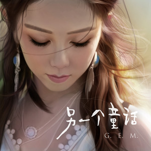
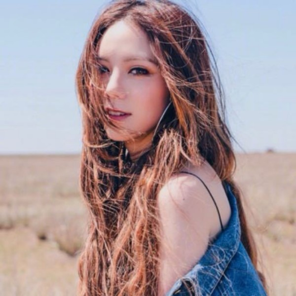
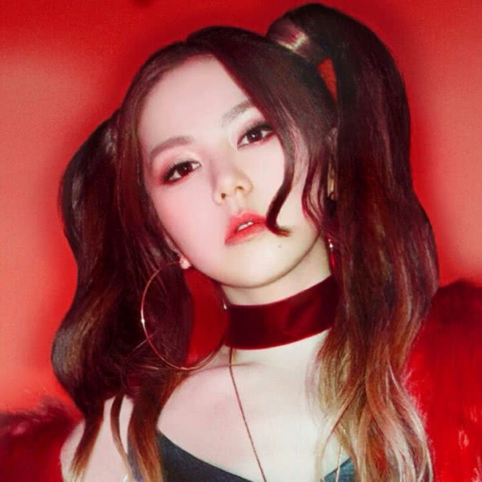
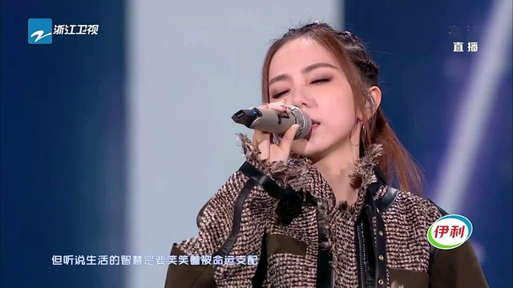
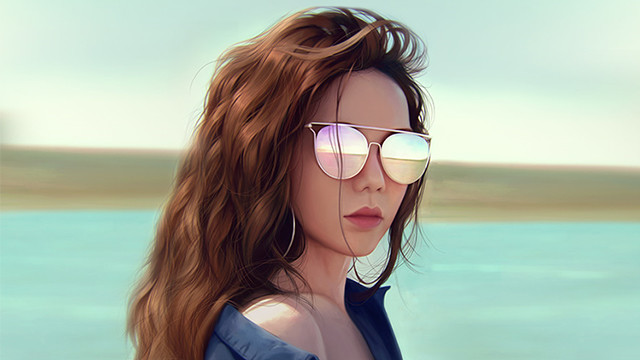
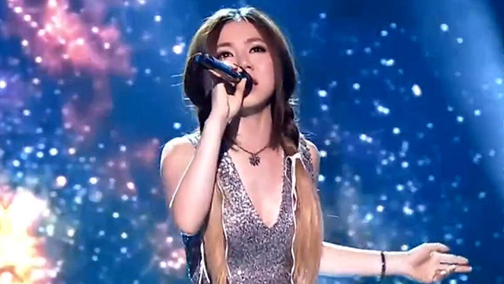

音乐馆
我的音乐
客户端
音乐号
VIP
菜单
登录
开通绿钻豪华版
开通付费包
G.E.M 邓紫棋
外文名：G.E.M.(Get Everybody Moving)、Gloria Tang 别名：金鱼|G.E.M.|邓宝|...
歌手简介
外文名：G.E.M.(Get Everybody Moving)、Gloria Tang
别名：金鱼|G.E.M.|邓宝|棋宝|Gloria|棋棋|小金鱼|金鱼G.E.M.|小巨肺|解解
原名：邓诗颖
国籍：中国
出生地：上海
出生日期：1991年8月16日
职业：歌手
代表作品：《睡公主》、《回忆的沙漏》、《A.I.N.Y.》、《我的秘密》、《泡沫》、《奇迹》、《偶尔》
主要成就：第27届美国KCA亚洲最受欢迎艺人、IPFI香港唱片全年最高销量女歌手、第24届金曲奖最佳国语女歌手提名、最年轻登上红馆开个唱的女歌手、叱咤乐坛生力军金奖首位未成年获奖、第二届 QQ音乐年度盛典年度最佳港台女歌手、QQ音乐巅峰榜人气搜索奖 简介：邓紫棋（Gloria Tang Tsz-Kei），又名G.E.M.，中国香港创作型女歌手、词曲创作人。 2008年7月10日以16岁之龄出道。同年10月16日发行首张EP《G.E.M.》，取得香港各大乐坛颁奖礼新人金奖。2011年5月，以19岁之龄在香港红馆举行5场个人演唱会。2012年7月，发行第四张个人专辑《Xposed》，凭借该专辑邓紫棋在2013年获得IFPI香港唱片销量大奖全年最高销量女歌手奖、最高销量国语唱片奖，并入围第24届金曲奖最佳国语女歌手奖。2014年1月，参加湖南卫视《我是歌手第二季》节目，获得总决赛亚军。3月31日，获第27届KCA美国儿童选择奖“最受欢迎亚洲艺人”。12月10日，邓紫棋的蜡像入驻香港杜莎夫人蜡像馆。2015年2月18日，参加2015年中央电视台春节联欢晚会，自弹自唱其自创的歌曲《多远都要在一起》。5月12日，再登福布斯中国名人榜，排名升至第11位 。2015年7月，未满24岁便完成80场个人演唱会。截至北京时间2015年11月22日伦敦温布利终站，《G.E.M.X.X.X.Live”世界巡回演唱会》已经完成73场。打破之前华语乐坛女歌手单轮巡演59场的记录。8月15日，确认加盟中国好声音第四季担任梦想导师。同年，成为首位在瑞士阿尔卑斯山脉少女峰11月6日，获MTV欧洲音乐奖“中国内地及香港地区最佳艺人奖”。 2018年11月4日，受邀参加美国NASA“科学突破奖”颁奖典礼，担任颁奖及表演嘉宾，演唱个人原创歌曲《光年之外》；11月19日，入选BBC“年度百大女性”举办音乐会的中国音乐人。2016年1月5日，邓紫棋入选《福布斯》"全球30岁以下30位最具潜力杰出音乐人" 。2019年12月，推出音乐专辑《摩天动物园》。 从艺历程：邓紫棋成长于一个音乐世家，母亲为上海音乐学院声乐系毕业生，外婆教唱歌，舅父拉小提琴，外公在乐团吹萨克斯风。在家人的熏陶下，邓紫棋自小便热爱音乐，喜爱唱歌。 邓紫棋5岁时便开始尝试作曲及填词，7岁时参与教育电视的演出，13岁完成了8级钢琴，并与陈奕迅合拍加州红月饼义卖广告。 邓紫棋小学就读中华基督教会协和小学，同时为校内诗歌班成员。中学就读真光女书院，课余时亦曾参与过体操。高中时期不断参加各种歌唱比赛，曾一年内嬴得5个比赛冠军。 2006年，14岁的邓紫棋参加Spice It Up学界联校歌唱比赛，夺得比赛冠军，被经理人张丹（Tan）邀请签约蜂鸟音乐，两年后正式成为歌手，同年，在Westlife的亚洲巡回演唱会（Westlife's Face to Face Asia Tour）中的记者会中担任表演嘉宾。2008年入读香港演艺学院，主修声学，因工作量日渐增多，2009年上半年放弃香港演艺学院的声学课程。 2008年，16岁的邓紫棋正式出道。同年10月，推出个人首张EP《G.E.M.》，碟内收录3首广东歌与2首国语歌，还收录了当年的参赛歌曲《Sleeping Beauty》的中文版《睡公主》；后夺得2008年度叱咤乐坛流行榜颁奖典礼“叱咤乐坛生力军女歌手金奖”，同时横扫香港其他各大音乐颁奖礼的新人奖项。 2009年5月5日，邓紫棋赴美国洛杉矶为首张个人大碟《18...》录音，并于2009年10月27日发行；同年 ，G.E.M.在九龙湾国际展贸中心举行《G.E.M. 18 LIVE 2009》演唱会，引起热烈反应，由原本两场加开至三场。同年12月，G.E.M.赴加拿大多伦多举行首个海外音乐会。 2010年4月7日，邓紫棋到中国台湾进行为期10天的宣传，并于2010年5月14日，推出首张个人大碟《18...》台湾版。7月30日，G.E.M.与黑泽明举行“拉阔擂台音乐会”。10月28日，G.E.M.推出第三张音乐专辑《MySecret》，11月1日推出限量纪念版《MySecret Box Set》。 2011年，年仅19岁的邓紫棋在香港红馆举办5场个人演唱会，在中国澳门、广东、澳洲、温哥华、多伦多、美国等地举办了“G.E.M. Get Everybody Moving”世界巡回演唱会。 2012年3月，邓紫棋代表中国香港，与日本歌手阳光直人、中国台湾歌手唐禹哲在亚洲博览馆举行以“亚洲三角”为主题的《ASIA MUSIC CONNECTION 2012》，在日本、中国台湾和中国香港举办巡回演唱会。4月，正式开始广东巡回音乐会之旅，4月21日佛山，4月29日番禺，5月东莞。 7月5日，邓紫棋推出第四张音乐专辑《Xposed》。 2013年开启“X.X.X. Live世界巡回演唱会”，4月在红馆完成一连五场中国香港站个人演唱会后，邓紫棋到奥地利等十个国家游学，9月举办广州站演唱会。10月，邓紫棋推出个人现场创作《LIVE Piano Session》 2014年，参赛中国湖南卫视《我是歌手第二季》，夺得总决赛亚军；4月，邓紫棋在洛杉矶举行的第27届儿童选择大奖颁奖礼（Kids' Choice Awards，KCA）获得“最受欢迎亚洲艺人大奖”，这是她的首个个人国际奖项；4月20日，参加在北京中国国际展览中心举行的2014北京国际汽车展览会，助阵英菲尼迪。5月16日、17日，邓紫棋在北京万事达中心连续举办两场《G.E.M. X.X.X. LIVE世界巡回演唱会》，这是邓紫棋第一次来北京举行个人演唱会。5月24日，邓紫棋在武汉沌口体育中心体育馆举办《G.E.M. X.X.X. LIVE世界巡回演唱会》武汉站。6月28日，邓紫棋在深圳春蚕体育场举办个人首次三万人户外体育场演唱会，门票提前一个月售罄。7月，邓紫棋在上海奔驰文化中心连续举办三场演唱会。7月，邓紫棋杭州演唱会开演前40天售罄，并加演一场。8月，邓紫棋成为首位Youtube Channel播放破亿的华人歌手，并签约代言美宝莲。9月，邓紫棋为《时尚COSMO》拍摄10月封面。10月，邓紫棋在广州国际体育演艺中心连开三场演唱会。10月底，作为即将登上太空的首位华人明星，邓紫棋前往荷兰阿姆斯特丹进行太空训练。12月10日，邓紫棋蜡像入驻香港杜莎夫人蜡像馆。2014年5月份至2014年底，邓紫棋总共举办了35场个人演唱会。 2015年1月，邓紫棋登上《时尚芭莎》封面。1月14日至18日，邓紫棋在香港红磡体育馆一连举办5场演唱会。1月23日至24日，邓紫棋在马来西亚连续举办两场演唱会。1月30日至2月1日，在新加坡连续举办3场演唱会。2月18日，邓紫棋参加2015央视羊年春晚，自弹自唱其自创的歌曲《多远都要在一起》。3月12日，邓紫棋首度在台北小巨蛋开唱。3月23日，邓紫棋参与录制的节目《康熙来了》播出。4月10日，在上海发布会上TAGHeuer泰格豪雅正式宣布邓紫棋成为其全球品牌形象大使，和林书豪等明星一同成为泰格豪雅全球品牌形象大使的一员，邓紫棋表示：“无惧挑战，成就自我”也是她的座右铭。4月13日，在音乐风云榜年度盛典中获得“港台最佳流行演唱人”奖。5月12日，2015福布斯中国名人榜发布，邓紫棋再度上榜，综合排名从去年的第91位跃居第11位，邓紫棋表示“我希望用舞台影响别人，无论以前还是未来都希望努力做好音乐。”5月23日，在上海八万人体育场举办个人演唱会。5月30日，7月10日，7月18日，7月25日，邓紫棋分别在合肥、长春、东莞、太原举行演唱会。8月1日，重返北京，于北京工人体育场完成《G.E.M. X.X.X. LIVE世界巡回演唱会》中国巡回终点站。此轮巡演到此已完成64场。8月21日，邓紫棋受邀成为“梦想导师”登上《中国好声音第四季》。 2016年1月5日，美国《福布斯》杂志公布2016年度“全球30岁以下最具潜力30名杰出音乐人”排行榜，邓紫棋成为亚洲地区唯一入选人士。2月26日，《福布斯》公布“亚洲30岁以下30大最具潜力文体明星”榜单，邓紫棋为榜单中唯一中国歌手。3月至4月邓紫棋凭专辑《新的心跳》第6届全球流行音乐金榜年度最佳女歌手、第2届酷音乐亚洲盛典年度最佳歌手（港台）等15个奖项。5月9日至23日期间，邓紫棋再次推出现场钢琴录音系列《Live Piano Session Ⅱ》，其中包括个人创作的新作品《给你的歌》、《画》以及重新用钢琴演绎摇滚旋律的《再见》。5月27日至30日，邓紫棋应TAG Heuer泰格豪雅之邀，以全球品牌大使身份出席2016年F1摩纳哥大奖赛，在摩纳哥驻华大使凯瑟琳·福特里埃女士（Catherine Fautrier）的陪同下参观了摩纳哥王宫。并为红牛车队助阵，参与了泰格豪雅新品发布会，现场弹唱《If I Ain't Got You》等歌曲 ；7月6日，邓紫棋作为鸟叔战队的“秘密武器”加盟由微鲸VR和灿星制作联合出品的中国首档EDM电子音乐真人秀《盖世英雄》；7月11日，“世界杰出华人青年大奖颁奖典礼”在中国香港举行，邓紫棋身着白色礼服出现，作为唯一一位歌手演艺人身份和各领域优秀人士一起获得“世界杰出华人青年大奖”；同年7月邓紫棋还推出三首EDM电音风格的歌曲，均是来自综艺节目《盖世英雄》中歌手竞技环节的翻唱歌曲，其中《红蔷薇白玫瑰》翻唱自BIGBANG太阳的歌曲《眼鼻嘴》，邓紫棋重新填词献唱，另一首《喜欢你（EDM Mix）》则是改编自BEYOND经典歌曲，由PSY（鸟叔）操刀编曲，G.E.M.邓紫棋重新演绎的一首EDM Mix全新版本，亦是G.E.M.邓紫棋首次与韩国团队跨国合作的作品以及《夜空中最亮的星》则是典型的“邓式”改编，以电子舞曲的方式诠释了这首走心且动人的歌曲，邓紫棋性感又真实的嗓音更是赋予这首歌新的魅力 ；9月30日，G.E.M邓紫棋《25LOOKS》写真集正式发行，内附的迷你专辑也于各大音乐平台同步上线，里面收录了《泡沫》、《瞬间》、《再见》、《多远都要在一起》四首歌曲的REMIX版本，利用动感的鼓点和魔幻的电音，重新演绎经典曲目，带来新的视听惊喜 ；11月11日，G.E.M.邓紫棋亮相“双十一狂欢夜”，演唱电音版《再见》燃起晚会火爆气氛；11月30日，邓紫棋与多位明星合作录制的2016年世界艾滋病日公益歌曲《瞳孔里的太阳》上线首发 ；12月2日，邓紫棋以29644733票摘得第十届音乐盛典咪咕汇最佳人气女歌手奖 ；12月30日，由邓紫棋创作并演唱的科幻冒险电影《太空旅客》中国区主题曲《光年之外》正式发行；12月31日，出席2017湖南卫视跨年演唱会，演唱《光年之外》，《夜空中最亮的星》两首歌曲。 2017年1月6日，作为邓紫棋大银幕处女作的青春励志电影《一路逆风》全国上映，影片围绕邓紫棋出道10年，讲述了一个深受90后观众欢迎的年轻音乐人，如何在网络时代从一鸣惊人到走向巅峰，再从低谷的绝望到一路逆风飞扬 ；1月27日，邓紫棋在央视鸡年春节联欢晚会广西分会场上，与张信哲、黄婉秋共同演唱歌曲《歌从漓江来》 ；4月，邓紫棋《Queen of Hearts》个人第三场世界巡回演唱会正式启动；5月，为电视剧《上古情歌》献唱片尾曲《桃花诺》；6月，为电视剧《楚乔传》献唱片尾曲《心之焰》。8月9日，获得2017华语金曲奖“年度艺人”、“我最喜爱的女歌手（中国香港）”、“全国传媒联合推介歌手”，同时她的歌曲《光年之外》获得“十大华语金曲”。 2018年5月，邓紫棋以唯一女制作人身份正式宣布加盟节目《中国新说唱》；6月25日，为电影《阿修罗》献唱主题曲《爱如意》；11月4日，出席在美国硅谷NASA太空总署举行、被称作科学界“超豪华版诺贝尔奖”的“科学突破奖”颁奖典礼，担任颁奖兼压轴表演嘉宾，演唱个人原创歌曲《光年之外》；11月19日，邓紫棋入选BBC“年度百大女性”，被评为畅销女性音乐人，懂得利用其影响力支持致力于音乐、教育与贫穷的慈善机构与组织；12月14日，发行EP《睡皇后》。 2019年4月19日，邓紫棋正式成立个人工作室；随后宣布会继续担任新一季《中国新说唱》的明星制作人，并首次独立带队；6月29日，邓紫棋作为表演嘉宾受邀参加第30届金曲奖，献唱《STREAMING》组曲，当中包括《光年之外》等十首YouTube平台观看破亿的华语歌曲；9月10日，歌曲《光年之外》YouTube播放量突破2亿，成为YouTube华语歌曲点击量TOP1；10月20日，为电影《终结者：黑暗命运》献唱的中国区主题曲《Walk on Water》正式上线；11月22日，发行专辑先行单曲《句号》，其歌词讲述个人十二年往事；2019年12月27日，发行个人第六张专辑《摩天动物园》。 2020年2月2日，发行单曲《平凡天使》，以致敬防疫工作中的平凡人。3月，参加芒果TV聚焦乐队成长的音乐节目《我们的乐队》。5月，参加爱奇艺观察类真人秀节目《我要这样生活》；5月28日，确认以导师身份加盟腾讯视频音乐节目《明日之子乐团季》；9月22日，官宣担任《中国新说唱2020》帮唱嘉宾；10月1日，参加2020年中央广播电视总台中秋晚会，演唱歌曲《萤火》。 荣誉记录：音乐类 ▪ 2020 2019年度流行音乐全金榜 年度最佳女歌手（港台地区） （获奖） ▪ 2020 2019年度流行音乐全金榜 年度最佳专辑 摩天动物园 （获奖） ▪ 2020 2019年度流行音乐全金榜 年度金曲 差不多姑娘 （获奖） ▪ 2020 第31届台湾金曲奖 最佳国语女歌手奖 （提名） ▪ 2020 第31届台湾金曲奖 最佳作曲人奖 摩天动物园 （提名） ▪ 2020 第31届台湾金曲奖 最佳国语专辑奖 摩天动物园 （提名） ▪ 2020 第31届台湾金曲奖 年度歌曲奖 摩天动物园 （提名） ▪ 2020 第31届台湾金曲奖 年度专辑奖 摩天动物园 （提名） ▪ 2020 2020hito流行音乐奖 hito年度十大华语歌曲 透明 （获奖） ▪ 2020 2020hito流行音乐奖 亚洲传媒推崇大奖 摩天动物园 （获奖） ▪ 2020 中华音乐人交流协会 2019年度十大单曲 摩天动物园 （获奖） ▪ 2020 第15届KKBOX数位音乐风云榜 年度风云歌手 （获奖） ▪ 2019 2019TMEA腾讯音乐娱乐盛典 年度最佳港台女歌手 （获奖） ▪ 2019 2019TMEA腾讯音乐娱乐盛典 年度最受欢迎港台女歌手 （获奖） ▪ 2019 2019亚洲新歌榜 年度媒体推荐歌曲 差不多姑娘 （获奖） ▪ 2019 2019亚洲新歌榜 年度最受欢迎歌手 （获奖） ▪ 2019 2019搜狗IN全景盛典 最IN年度唱作歌手 （获奖） ▪ 2019 2019腾讯娱乐白皮书 星推榜年度女歌手 （获奖） ▪ 2018 2018新城劲爆颁奖礼 新城劲爆国语力歌手 （获奖） ▪ 2018 2018新城劲爆颁奖礼 新城劲爆国语力歌曲 倒数 （获奖） ▪ 2018 第12届无线音乐盛典咪咕汇 年度最佳女歌手 （获奖） ▪ 2018 第12届无线音乐盛典咪咕汇 年度十大金曲奖 倒数 （获奖） ▪ 2018 第12届无线音乐盛典咪咕汇 年度最佳人气女歌手奖 （获奖） ▪ 2018 第13届KKBOX数位音乐风云榜 年度风云歌手 （获奖） ▪ 2018 2018 Billboard Radio China 年度华语十大金曲 倒数 （获奖） ▪ 2018 2018 Billboard Radio China 年度华语十大金曲 那一夜 （获奖） ▪ 2018 2019爱奇艺尖叫之夜 年度女歌手 （获奖） ▪ 2017 第11届无线音乐盛典咪咕汇 年度港台最受欢迎女歌手奖 （获奖） ▪ 2017 第11届无线音乐盛典咪咕汇 年度十大金曲奖 光年之外 （获奖） ▪ 2017 第11届无线音乐盛典咪咕汇 年度最佳人气女歌手奖 （获奖） ▪ 2017 第12届KKBOX数位音乐风云榜年度风云歌手 （获奖） ▪ 2017 2017 Billboard Radio China 年度华语十大金曲 光年之外 （获奖） ▪ 2017 2017华语金曲奖 年度艺人 （获奖） ▪ 2017 2017华语金曲奖 我最喜爱的女歌手（香港） （获奖） ▪ 2017 2017华语金曲奖 全国传媒联合推介歌手 （获奖） ▪ 2017 2017华语金曲奖 十大华语金曲 光年之外 （获奖） ▪ 2017 2017MTV全球华语音乐盛典 最佳女歌手 （获奖） ▪ 2017 2017MTV全球华语音乐盛典 最佳十大金曲 （获奖） ▪ 2016 第27届台湾金曲奖 最佳演唱录音专辑奖 新的心跳 （提名） ▪ 2016 2016EMA欧洲MTV音乐大奖 中国内地及香港地区最佳艺人奖 （获奖） ▪ 2016 2016hito流行音乐奖 hito香港推崇歌手 （获奖） ▪ 2016 中华音乐人交流协会 2015年度十大专辑 新的心跳 （获奖） ▪ 2016 中华音乐人交流协会 2015年度十大单曲 瞬间 （获奖） ▪ 2016 2016年IFPI香港唱片销量大奖 十大销量国语唱片 25LOOKS （获奖） ▪ 2016 2016年IFPI香港唱片销量大奖 全年最高销量国语唱片 25LOOKS （获奖） ▪ 2016 2016年IFPI香港唱片销量大奖 十大销量本地歌手 （获奖） ▪ 2016 第16届全球华语歌曲排行榜 最受欢迎女歌手奖 （获奖） ▪ 2016 第16届全球华语歌曲排行榜 五大最受欢迎女歌手奖[ （获奖） ▪ 2016 第16届全球华语歌曲排行榜 年度二十大金曲 新的心跳 （获奖） ▪ 2016 第16届全球华语歌曲排行榜 传媒推荐大奖 （获奖） ▪ 2016 第4届音悦v榜年度盛典 港台最具人气歌手 （获奖） ▪ 2016 第4届音悦v榜年度盛典 港台最佳女歌手 （获奖） ▪ 2016 第11届无线音乐盛典咪咕汇 年度最佳人气女歌手 （获奖） ▪ 2016 2016QQ音乐巅峰盛典 年度最佳港台女歌手 （获奖） ▪ 2016 2016QQ音乐巅峰盛典 年度最佳唱作专辑 新的心跳 （获奖） ▪ 2016 第23届东方风云榜 香港地区最受欢迎歌手 （获奖） ▪ 2016 第23届东方风云榜 亚洲人气歌手 （获奖） ▪ 2016 2016酷音乐亚洲盛典 年度最佳专辑（港台） 新的心跳 （获奖） ▪ 2016 2016酷音乐亚洲盛典 年度最佳歌手（港台） （获奖） ▪ 2016 第6届全球流行音乐金榜 年度最佳女歌手 （获奖） ▪ 2016 第6届全球流行音乐金榜 新加坡UFM100.3推崇大奖 （获奖） ▪ 2016 第6届全球流行音乐金榜 年度二十大金曲 新的心跳 （获奖） ▪ 2016 2015香港流行音乐MV颁奖典礼 Neway最高点播 瞬间 （获奖） ▪ 2016 2015香港流行音乐MV颁奖典礼 最佳女歌手MV（金奖） 瞬间 （获奖） ▪ 2016 2015香港流行音乐MV颁奖典礼 全年十大MV大奖（金奖） 瞬间 （获奖） ▪ 2016 2015香港流行音乐MV颁奖典礼 2015季选MV奖 新的心跳 （获奖） ▪ 2016 2015香港流行音乐MV颁奖典礼 全年最具人气MV（金奖） 瞬间 （获奖） ▪ 2015 2015年IFPI香港唱片销量大奖 十大销量本地歌手 （获奖） ▪ 2015 2015年IFPI香港唱片销量大奖 十大销量国语唱片 新的心跳 （获奖） ▪ 2015 2015年IFPI香港唱片销量大奖 全年最高销量国语唱片 新的心跳 （获奖） ▪ 2015 2015年度加拿大至 HIT 中文歌曲排行榜 全国推崇女歌手 （获奖） ▪ 2015 2015年度加拿大至 HIT 中文歌曲排行榜 全国推崇唱作人 （获奖） ▪ 2015 2015年度加拿大至 HIT 中文歌曲排行榜 全国推崇十大歌曲（国语） 你不是真正的快乐 （获奖） ▪ 2015 2015新城国语力颁奖礼 新城国语力全球最受欢迎歌手大奖 （获奖） ▪ 2015 2015新城国语力颁奖礼 新城国语力全球最受欢迎舞台大奖 （获奖） ▪ 2015 2015新城国语力颁奖礼 新城国语力全球最受欢迎歌曲 多远都要在一起 （获奖） ▪ 2015 2015新城国语力颁奖礼 新城国语力年度歌手 （获奖） ▪ 2015 2015新城国语力颁奖礼 新城国语力年度歌曲 多远都要在一起 （获奖） ▪ 2015 第15届音乐风云榜年度盛典 港台最佳流行演唱人 （获奖） ▪ 2015 第15届音乐风云榜年度盛典 最受欢迎演唱会 （获奖） ▪ 2015 第9届无线音乐盛典咪咕汇 年度最佳歌手 （获奖） ▪ 2015 第9届无线音乐盛典咪咕汇 年度最畅销十大金曲奖 喜欢你 （获奖） ▪ 2015 2015QQ音乐年度盛典 年度最佳香港女歌手 （获奖） ▪ 2015 2015QQ音乐年度盛典 年度最佳影视金曲 后会无期 （获奖） ▪ 2015 2015QQ音乐年度盛典 QQ音乐巅峰榜人气搜索 泡沫 （获奖） ▪ 2015 第10届KKBOX数位音乐风云榜 年度粤语歌手 （获奖） ▪ 2015 第22届东方风云榜 香港地区最受欢迎歌手 （获奖） ▪ 2015 2015 Billboard Radio China 年度艺人 （获奖） ▪ 2014 2014新城劲爆颁奖礼 新城劲爆歌曲 喜欢你 （获奖） ▪ 2014 2014新城劲爆颁奖礼 新城劲爆年度歌手大奖 （获奖） ▪ 2014 2014新城劲爆颁奖礼 新城全球劲爆歌手 （获奖） ▪ 2014 2014新城劲爆颁奖礼 新城全球劲爆舞台大奖 （获奖） ▪ 2014 第37届十大中文金曲 优秀流行国语歌曲奖（铜奖） 偶尔 （获奖） ▪ 2014 第27届KCA美国儿童选择奖 亚洲最受欢迎艺人奖 （获奖） ▪ 2014 2014年IFPI香港数码音乐大奖 十大数码畅销歌曲 你把我灌醉 （获奖） ▪ 2014 2014新城国语力颁奖礼 新城国语力全球最受欢迎舞台大奖 （获奖） ▪ 2014 第15届华语音乐传媒大奖 年度艺人 （获奖） ▪ 2014 第14届音乐风云榜年度盛典 港台最受欢迎女歌手 （获奖） ▪ 2014 第2届音悦v榜年度盛典 港台年度风向女艺人奖 （获奖） ▪ 2014 第8届无线音乐盛典咪咕汇 年度最受欢迎港台女歌手 （获奖） ▪ 2014 第8届无线音乐盛典咪咕汇 年度最畅销十大金曲奖 A.I.N.Y. （获奖） ▪ 2014 第8届无线音乐盛典咪咕汇 年度咪咕音乐人气金曲奖 泡沫 （获奖） ▪ 2014 2014雪碧音碰音颁奖盛典 年度最佳女歌手 （获奖） ▪ 2013 十大劲歌金曲 你把我灌醉 （获奖） ▪ 2012 十大劲歌金曲 What Have U Done （获奖） ▪ 2012 最受欢迎唱作歌星（银奖） （获奖） ▪ 2010 年度杰出表现奖（银奖） （获奖） ▪ 2009 杰出表现奖（金奖） （获奖） ▪ 2008 最受欢迎女新人（金奖） （获奖） 叱咤乐坛流行榜颁奖典礼 ▪ 2008 叱咤乐坛生力军女歌手（金奖） （获奖） 新城劲爆颁奖礼 ▪ 2014 新城劲爆歌曲 喜欢你 （获奖） ▪ 2014 新城劲爆年度歌手大奖 （获奖） ▪ 2014 新城全球劲爆歌手 （获奖） ▪ 2014 新城全球劲爆舞台大奖 （获奖） ▪ 2013 播放指数歌手大奖 （获奖） ▪ 2013 新城劲爆我最欣赏女歌手 （获奖） ▪ 2013 新城劲爆女歌手 （获奖） ▪ 2012 新城劲爆年度专辑大奖 Xposed （获奖） ▪ 2012 新城劲爆年度歌曲大奖 Someday I'll Fly （获奖） ▪ 2012 新城劲爆女歌手 （获奖） ▪ 2011 新城劲爆女歌手 （获奖） ▪ 2011 劲爆舞台大奖 （获奖） ▪ 2010 新城劲爆演绎大奖 （获奖） ▪ 2010 新城劲爆创作歌手 （获奖） ▪ 2010 新城劲爆歌曲 Good To Be Bad （获奖） ▪ 2009 新城劲爆原创歌曲 A.I.N.Y. （获奖） ▪ 2009 新城劲爆演绎大奖 （获奖） ▪ 2009 四台连颁音乐大奖 卓越大奖（银奖） （获奖） ▪ 2008 新城劲爆新人王创作歌手 （获奖） 十大中文金曲颁奖音乐会 ▪ 2014 37 优秀流行国语歌曲奖（铜奖） 偶尔 （获奖） ▪ 2013 36 优秀流行歌手大奖 （获奖） ▪ 2013 36 优秀流行国语歌曲（金奖） 你把我灌醉 （获奖） ▪ 2012 35 优秀流行歌手大奖 （获奖） ▪ 2012 35 作词人奖 （获奖） ▪ 2012 35 十大中文金曲 What Have U Done （获奖） ▪ 2011 34 优秀流行歌手大奖 （获奖） ▪ 2011 34 优秀流行国语歌曲奖（银奖） 我的秘密 （获奖） ▪ 2011 34 作曲人奖 （获奖） ▪ 2010 33 优秀流行歌手大奖 （获奖） ▪ 2010 33 十大中文金曲 Get Over You （获奖） ▪ 2009 32 优秀流行歌手大奖 （获奖） ▪ 2009 32 全年最佳进步奖（金奖） （获奖） ▪ 2008 31 最有前途新人奖（银奖） （获奖） IFPI香港唱片销量大奖 ▪ 2016 十大销量本地歌手 （获奖） ▪ 2016 十大销量国语唱片 新的心跳 （获奖） ▪ 2016 全年最高销量国语唱片 新的心跳 （获奖） ▪ 2013 十大销量本地歌手 （获奖） ▪ 2013 最畅销本地现场录制音像出品 G.E.M. X.X.X. Live （获奖） ▪ 2012 十大销量国语唱片 Xposed （获奖） ▪ 2012 全年最高销量国语唱片 Xposed （获奖） ▪ 2012 十大销量本地歌手 （获奖） ▪ 2012 全年最高销量本地女歌手 （获奖） ▪ 2011 十大销量国语唱片 My Secret （获奖） ▪ 2011 十大销量本地歌手 （获奖） ▪ 2011 十大数码畅销歌曲 A.I.N.Y. （获奖） ▪ 2011 全年最高销量本地现场录制音像出品 G.E.M. Get Everybody Moving Concert 2011 （获奖） ▪ 2010 十大销量广东唱片 My Secret （获奖） ▪ 2009 十大销量广东唱片 18... （获奖） ▪ 2009 十大销量本地歌手 （获奖） ▪ 2008 最畅销本地女新人 （获奖） uChannel uChoice音乐评选 ▪ 2008 Youth最爱女新人金奖 （获奖） ▪ 2008 Youth最爱年度十大歌曲 Where Did U Go （获奖） PM第七届乐坛颁奖礼 ▪ 2008 年度卓越唱作演绎女新人 （获奖） 加拿大至HIT中文歌曲排行榜 ▪ 2015 全国推崇女歌手 （获奖） ▪ 2015 全国推崇唱作人 （获奖） ▪ 2015 全国推崇十大歌曲（国语） 你不是真正的快乐 （获奖） ▪ 2012 全国推崇女歌手 （获奖） ▪ 2012 全国推崇十大歌曲 Someday I'll Fly （获奖） ▪ 2009 全国推崇十大歌曲（粤语） All About U （获奖） ▪ 2008 年度卓越唱作演绎女新人 （获奖） 劲歌金曲优秀选第一回 ▪ 2009 劲歌金曲优秀选 Where Did U Go （获奖） 劲歌金曲优秀选第三回 ▪ 2010 劲歌金曲优秀选 Get Over You （获奖） ▪ 2009 劲歌金曲优秀选 Game Over （获奖） 杰出表现奖（金奖） ▪ 2009 2009年度杰出表现奖（金奖） （获奖） TVB8金曲榜颁奖典礼 ▪ 2013 金曲奖 你把我灌醉 （获奖） ▪ 2012 金曲奖 Oh Boy （获奖） ▪ 2012 最佳唱作歌手奖（金奖） （获奖） ▪ 2012 全球观众最爱粤语歌曲奖 What Have U Done （获奖） ▪ 2009 全球最爱粤语歌曲奖 Where Did U Go （获奖） 新城国语力颁奖礼 ▪ 2015 新城国语力全球最受欢迎歌手大奖 （获奖） ▪ 2015 新城国语力全球最受欢迎舞台大奖 （获奖） ▪ 2015 新城国语力全球最受欢迎歌曲 多远都要在一起 （获奖） ▪ 2015 新城国语力年度歌手 （获奖） ▪ 2015 新城国语力年度歌曲 多远都要在一起 （获奖） ▪ 2014 新城国语力全球最受欢迎舞台大奖 （获奖） ▪ 2013 新城国语力女歌手 （获奖） ▪ 2013 新城国语力歌曲 你把我灌醉 （获奖） ▪ 2013 新城国语力年度歌手 （获奖） ▪ 2013 新城国语力作曲人大奖 潜意式的残酷 （获奖） ▪ 2012 新城国语力歌曲 Oh Boy （获奖） ▪ 2012 新城国语力女歌手 （获奖） ▪ 2012 新城国语力年度歌手 （获奖） ▪ 2011 新城国语力最受欢迎专辑 My Secret （获奖） ▪ 2011 新城国语力女歌手 （获奖） ▪ 2010 新城国语力歌曲 A.I.N.Y. （获奖） ▪ 2009 新城国语新势力歌手 （获奖） Yes!! Idol 全港偶像总选 ▪ 2010 第四届 唱K点爆女Idol （获奖） ▪ 2010 第四届 最人气急升女Idol （获奖） ▪ 2009 第三届 最人气急升女Idol （获奖） 广州华语音乐盛典 ▪ 2009 乐迷最爱女新人 （获奖） 华语音乐传媒大奖 ▪ 2014 第十五届 年度艺人 （获奖） ▪ 2008 第九届 最佳粤语女新人 （获奖） 劲歌金曲优秀选第二回 ▪ 2012 劲歌金曲优选 What Have U Done （获奖） ▪ 2010 劲歌金曲优秀选 Good To Be Bad （获奖） 全球华语歌曲排行榜颁奖典礼 ▪ 2013 第13届 年度二十大金曲 泡沫 （获奖） ▪ 2013 第13届 最受欢迎创作歌手 （获奖） ▪ 2010 第10届 地区杰出歌手（中国香港） （获奖） Yahoo!人气大奖 ▪ 2013 人气MV 偶尔 （获奖） ▪ 2013 人气演唱会 G.E.M. X.X.X. LIVE 世界巡回演唱会 （获奖） ▪ 2013 人气国语歌曲 你把我灌醉 （获奖） ▪ 2012 十大人气歌曲 What Have U Done （获奖） ▪ 2012 人气大碟 Xposed （获奖） ▪ 2010 十大人气歌曲 Good To Be Bad （获奖） ▪ 2008 乐坛新势力女歌手 （获奖） SINA Music乐坛民意指数颁奖礼 ▪ 2012 最高收听率二十大歌曲 Someday I'll Fly （获奖） ▪ 2012 最佳网路营销歌手 （获奖） ▪ 2012 创作女歌手 （获奖） 演艺人杰出表现奖颁奖典礼 ▪ 2012 音乐杰出表现女歌手 （获奖） 第24届台湾金曲奖 ▪ 2013 最佳国语女歌手 （提名） 2014 KCA美国儿童选择奖 ▪ 2014 亚洲最受欢迎艺人奖 （获奖） 我是歌手（第二季） ▪ 2014 总亚军 （获奖） 音乐风云榜年度盛典 ▪ 2015 15 港台最佳流行演唱人 （获奖） ▪ 2015 15 最受欢迎演唱会 （获奖） ▪ 2014 14 港台最受欢迎女歌手 （获奖） 音悦V榜盛典 ▪ 2016 港台最具人气歌手 （获奖） ▪ 2016 港台最佳女歌手 （获奖） ▪ 2014 港台年度风向女艺人奖 （获奖） 无线音乐盛典咪咕汇 ▪ 2016 第十届 年度最佳人气女歌手 （获奖） ▪ 2015 第九届 年度最佳歌手 （获奖） ▪ 2015 第九届 年度最畅销十大金曲奖 喜欢你 （获奖） ▪ 2014 第八届 年度最受欢迎港台女歌手 （获奖） ▪ 2014 第八届 年度最畅销十大金曲奖 A.I.N.Y. （获奖） ▪ 2014 第八届 年度咪咕音乐人气金曲奖 泡沫 （获奖） QQ音乐年度盛典 ▪ 2016 年度最佳港台女歌手 （获奖） ▪ 2016 年度最佳唱作专辑 新的心跳 （获奖） ▪ 2015 年度最佳香港女歌手 （获奖） ▪ 2015 年度最佳影视金曲 后会无期 （获奖） ▪ 2015 QQ音乐巅峰榜人气搜索 泡沫 （获奖） 雪碧音碰音颁奖盛典 ▪ 2014 年度最佳女歌手 （获奖） 东方风云榜 ▪ 2016 香港地区最受欢迎歌手 （获奖） ▪ 2016 亚洲人气歌手 （获奖） ▪ 2015 香港地区最受欢迎歌手 （获奖） 福布斯中国名人榜 ▪ 2015 福布斯中国名人榜第11名 （获奖） ▪ 2014 福布斯中国名人榜第91名 （获奖） Billboard Radio中国 ▪ 2015 Billboard Radio China 年度艺人 （获奖） 福布斯30under30 ▪ 2016 福布斯30under30:Music （获奖） ▪ 2016 福布斯30under30 Asia:Entertainment&Sports （获奖） 酷音乐亚洲盛典 ▪ 2016 年度最佳专辑（港台） 新的心跳 （获奖） ▪ 2016 年度最佳歌手（港台） （获奖） 全球流行音乐金榜 ▪ 2016 第六届 年度最佳女歌手 （获奖） ▪ 2016 第六届 新加坡UFM100.3推崇大奖 （获奖） ▪ 2016 第六届 年度二十大金曲 新的心跳 （获奖） 世界杰出华人青年大奖 ▪ 2016 第一届 世界杰出华人青年大奖 （获奖） 香港流行音乐MV颁奖礼 ▪ 2016 Neway最高点播 瞬间 （获奖） ▪ 2016 最佳女歌手MV（金奖） 瞬间 （获奖） ▪ 2016 全年十大MV大奖（金奖） 瞬间 （获奖） ▪ 2016 2015季选MV奖 新的心跳 （获奖） ▪ 2016 全年最具人气MV（金奖） 瞬间 （获奖） 中华音乐人交流协会年度十大专辑暨单曲 ▪ 2016 2015 2015年度十大专辑 新的心跳 （获奖） ▪ 2016 2015 2015年度十大单曲 瞬间 （获奖） Hito流行音乐颁奖典礼 ▪ 2016 Hito香港推崇歌手 （获奖） 华语金曲奖 ▪ 2017 年度艺人 （获奖） ▪ 2017 我最喜爱的女歌手（中国香港） （获奖） ▪ 2017 全国传媒联合推介歌手 （获奖） ▪ 2017 十大华语金曲 光年之外 （获奖） MTV全球华语音乐盛典 ▪ 2017 最佳女歌手 （获奖） ▪ 2017 最佳十大金曲 （获奖）
单曲
318
专辑
50
MV
1236
播放歌手热门歌曲
关注 1329.5万
歌手歌单

最·邓紫棋
播放量：6598.5万

G.E.M邓紫棋
播放量：527.9万

邓紫棋Top20歌曲
播放量：2326.5万
刀郎的老歌
播放量：621.9万
歌手MV
光年之外 邓紫棋
官方MV
2174.9万

Fly away G.E.M
浙江卫视
563.1万

倒数 邓紫棋
官方MV
1293.4万

夜空中最亮的星
盖世英雄 第四期
807.8万

 登录
登录